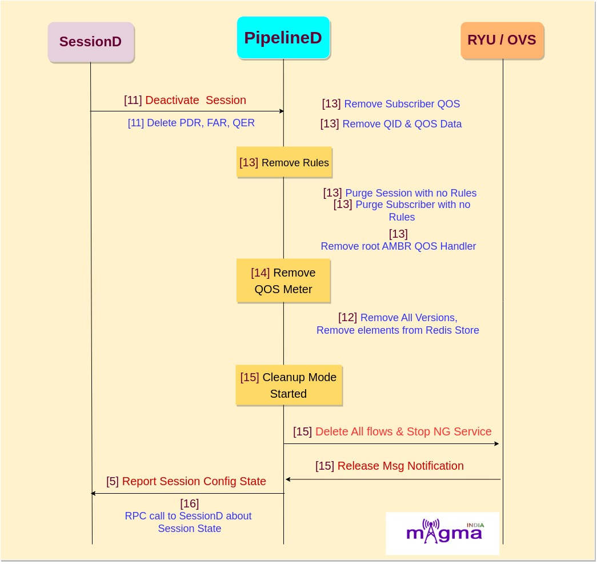
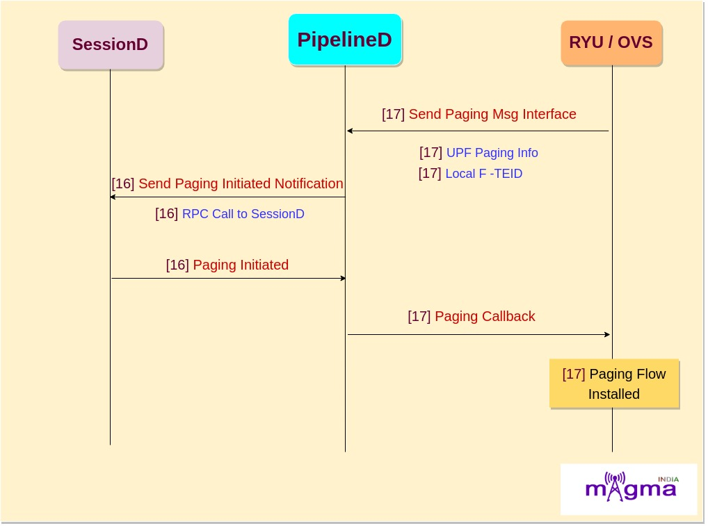

Magma SessionD Service [0]¶

SessionD is the main service responsible for managing and enforcing session configurations. It also coordinates the lifecycle of a session. AccessD calls Sessiond for the session’s creation, modification, and termination. Compared with network functions, it can be considered as Session Management Function(SMF).
SessionD’s Interface with other Services¶
SessionD <——> AccessD¶
SM Context Request from AccessD for the establishment of a session.
SessionD <——> PipelineD¶
Responsible for policy and QoS enforcement. Pipelined receives any relevant policy and QoS configuration from SessionD and periodically reports usage accordingly.
SessionD <——> PolicyDB¶
Responsible for propagating any session or policy configuration that sessioD must enforce.
Architecture of SessionD¶
SessionD is created by combining different components such as:
Call Flow¶
PDU Session Establishment¶

[29] Handling set message from AMF
[29] Send create sesion
[29] Set Session ID
[29] M5g enforcer initialisation
[27] New Session state object
[27] Creating sesion state object with ‘Creating’ state
[27] Writing session in session map
[28] Write session
[28] Set current version of session
[28] Set fsm state
[27] Process static and dynamic rules to install
[27] Session state change
[28] Rule map addition, charging and monitoring criteria
[27] M5g send session request to UPF
[27] Set subscribed qos,
[27] Set priority level
[27] Set preemption capability
[27] Set PDR, FAR, URR and BAR mapping
[27] Set UPF node
[14] PipelinedD create session request
[14] Set subscriber ID, Teid
[14] QOS flow setup done
[2] Handle response to AccessD
[2] Handle notification to AccessD
Session Release/Termination¶
[29] Initiate Session Release
[27] Get session ID
[27] M5g start session termination
[27] PDR Map Erase
[27] Remove all rules for termination
If there is termination because of no required report from UPF then follow the below steps
[27] M5g complete termination
[27] Find session from Session Store
[27] Remove session from session map
Final Steps for both the cases
Paging Request¶
[33] PipelineD sends paging request to sessionD
[33] Local F-TEID
[33] UE IP address
[24] SessionD receives the message
[24] Get the subscriber ID from MobilityD w.r.t UE IP address
[24] SessionD reads the session map from session store.
[2] SessionD sends the notification to AccessD
[2] Handle Notification to AccessD